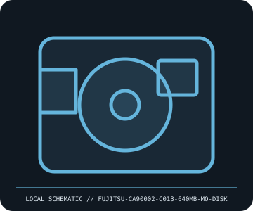

[ REMOVABLE MEDIA // MODEL-SPECIFIC RECORD ]
Fujitsu CA90002-C013 640 MB Magneto-Optical Disk
Fujitsu 3.5-inch rewritable 640 MB magneto-optical media. This catalog entry distinguishes the removable medium from its drive/reader and calls out model-specific fit and format caveats.

IDENTIFICATION: Transcribe the entire model/part number, capacity, generation and revision from the label or packaging. Confirm the exact host-device manual before inserting or writing.
Format, capacity and compatibility
| Product / part ID | Fujitsu CA90002-C013 640 MB Magneto-Optical Disk |
|---|---|
| Generation / format | Fujitsu 3.5-inch rewritable 640 MB magneto-optical media |
| Capacity and medium | Fujitsu CA90002-C013, 3.5-inch rewritable magneto-optical disk, 640 MB capacity class. The medium is cartridge-enclosed; it is not a CD/DVD drive or 230 MB Sony MO disk. |
| Compatibility | Use only in a 3.5-inch MO drive whose manual lists 640 MB media (e.g., supported Fujitsu M2513/MCC/MCG generation models); a 128/230/540 MB-only drive may not write or recognize this generation. SCSI/ATAPI interface and host filesystem are additional constraints. |
| Version and model caveat | Part CA90002-C013 identifies this Fujitsu 640 MB medium; other part suffixes and 3.5-inch MO capacities may have different compatibility. Do not infer fit from shell appearance or the generic “MO” label. |
Handling and preservation
Keep the protective shutter closed and disk in its case. Avoid dust, scratches, moisture, direct heat, impact, and opening the shell. Store upright in stable conditions and preserve contents as read-only images with verified checksums before aging hardware fails.
- Preserve original packaging, label, acquisition notes and any write-protect state; photograph the media before use.
- Make at least two independent copies of valuable data, verify checksums, and periodically test a restore. A removable cartridge or card alone is not an archival strategy.
Model and version notes
Part CA90002-C013 identifies this Fujitsu 640 MB medium; other part suffixes and 3.5-inch MO capacities may have different compatibility. Do not infer fit from shell appearance or the generic “MO” label.
Standards and product-family sources establish the generation; exact model manuals, labels, regional revisions, firmware, interface and host support determine actual interchangeability.
Sources and standards
- Fujitsu CA90002-C013 product identificationPart-number and capacity reference for this specific Fujitsu 640 MB MO medium; exact drive compatibility is determined by drive documentation.
- ISO — Optical disk media standards catalogueStandards-family reference for optical storage media; MO generations are not presumed mutually compatible.
Manufacturer and standards references are preferred; archival manuals or museum records are identified when products are discontinued. Capacity and compatibility claims are scoped to the specific SKU and generation named above.